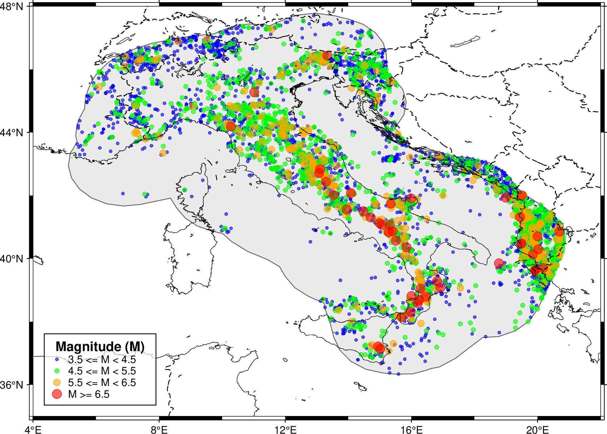

Catalogue
This notebook shows how you can examine statistical parameters of an earthquake catalogue and visualize it on a high-quality map.
[1]:
import pandas as pd
import os
from IPython.display import Image, display
from openquake.plt.catalogue import visualize_catalogue
Descriptions of inputs and input files used here are briefly summarized below. For more detailed information, please see Data Format section.
catalogue (str): Path to the HMTK-formatted CSV catalogue.
polygon (str): Path to the GeoJSON file for the study area boundary.
region (list): Map extent [West, East, South, North].
output_png (str): Path to output image.
bins (list): List of dictionaries containing magnitude bins and their formatting styles. Defaults to 3.5-4.5-5.5-6.5 binning scheme.
[2]:
catalogue = "../data/cat_it.csv"
polygon = "../data/it_11in1_buffered.geojson"
output_map = "it_map.png"
it_region = [4, 22, 35, 48]
custom_bins = [
{"min_mag": 3.5, "max_mag": 4.5, "color": "blue", "size": "0.08c"},
{"min_mag": 4.5, "max_mag": 5.5, "color": "green", "size": "0.12c"},
{"min_mag": 5.5, "max_mag": 6.5, "color": "orange", "size": "0.18c"},
{"min_mag": 6.5, "max_mag": None, "color": "red", "size": "0.25c"}
]
Statistics of catalogue
This block loads the earthquake catalogue and generates a descriptive statistics table, including mean, standard deviation, and median, to provide an overview of the catalogue’s range and distribution.
[3]:
df = pd.read_csv(catalogue)
# Generate descriptive statistics
summary_cols = ["magnitude", "depth", "year"]
stats_summary = df[summary_cols].describe().T
stats_summary['range'] = stats_summary['max'] - stats_summary['min']
stats_summary.columns = [
'Count', 'Mean', 'Std Dev', 'Min', '25%', '50% (Median)', '75%', 'Max', 'Range'
]
print("Statistical Summary of the catalogue: ")
display(stats_summary.style.format("{:.2f}"))
print(f"\nTotal Number of Events: {len(df)}")
print(f"Time Span: {df['year'].min():.0f} to {df['year'].max():.0f} ({df['year'].max() - df['year'].min():.0f} years)")
Statistical Summary of the catalogue:
| Count | Mean | Std Dev | Min | 25% | 50% (Median) | 75% | Max | Range | |
|---|---|---|---|---|---|---|---|---|---|
| magnitude | 7528.00 | 4.30 | 0.63 | 3.50 | 3.79 | 4.20 | 4.65 | 7.34 | 3.84 |
| depth | 7528.00 | 10.33 | 8.20 | 0.00 | 5.00 | 9.10 | 12.50 | 50.00 | 50.00 |
| year | 7528.00 | 1916.21 | 133.43 | 1005.00 | 1896.00 | 1963.00 | 2002.00 | 2020.00 | 1015.00 |
Total Number of Events: 7528
Time Span: 1005 to 2020 (1015 years)
Catalogue visualization using GMT
The next block uses a plotting function that is available in the module openquake.plt.catalogue.
This function provides a professional mapping interface for HMTK-formatted catalogues,
Supports GeoJSON for boundary plotting,
Bins earthquakes by magnitude for clear visualization,
Produces publication-quality Generic Mapping Tools (GMT) [2] maps with legends and geographic layers.
[5]:
output_dir = os.path.join("..", "output")
if not os.path.exists(output_dir):
os.makedirs(output_dir)
file_name = "cat_it_map.png"
output_map = os.path.join(output_dir, file_name)
visualize_catalogue(
catalogue=catalogue,
polygon=polygon,
region=it_region,
output_png=output_map,
bins=custom_bins
)
display(Image(filename=output_map))
Done! ../output/cat_it_map.png generated.
